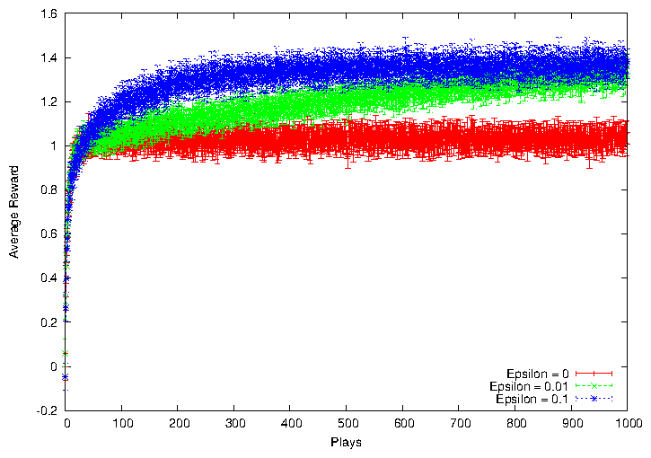
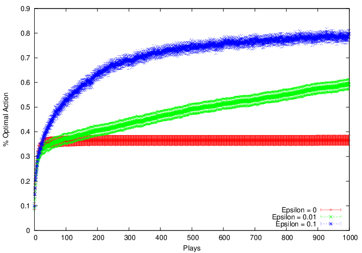
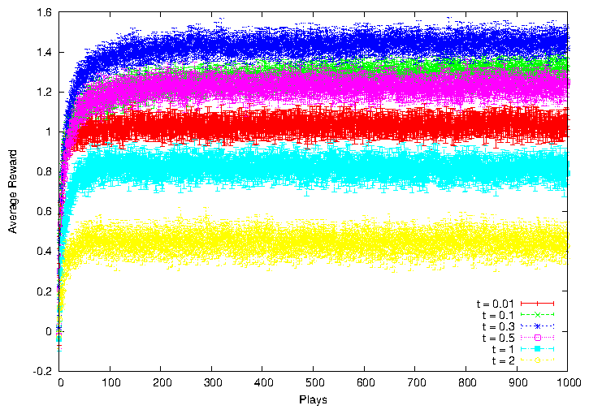
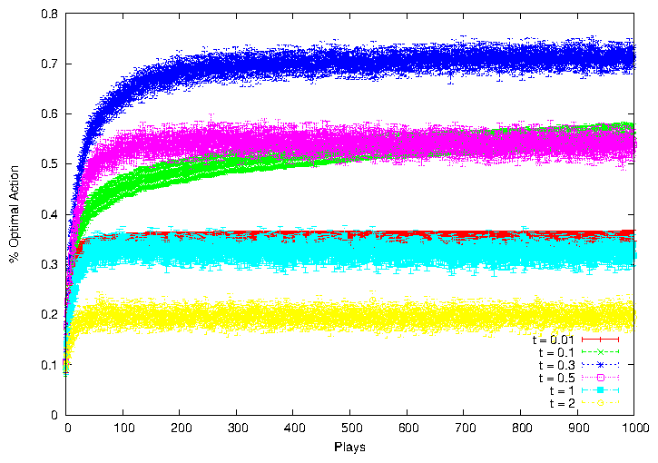
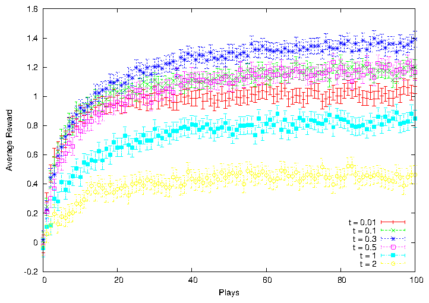
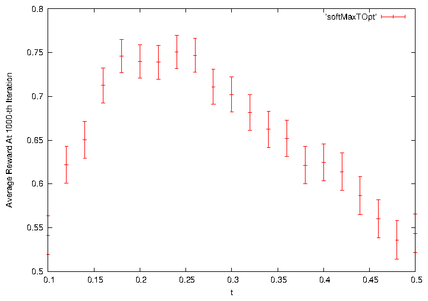

These are the results same as figure 2.1 in the book.
These are tested on the 10-armed testbed, averaged over 2000 tasks. All methods used sample averages as their action-value estimates.


Figure 1: Average performance of ϵ-greedy action-value methods.
The vertical bars are 95% confidence interval (same case for all the figures in this report).
It can be observed from the optimal action figure in Figure 1 that when ϵ is 0, the agent is sticking to the current best choice after 100 iterations.
On the other hand, the performance of ϵ = 0.1 is unstable, even though it converges at a better average reward.
Actually, the average length of confidence intervals of average reward (upper one in Figure 1) for each ϵ is:
ϵ
average length of confidence interval
0
0.0514
0.01
0.0523
0.1
0.0555
So, with higher ϵ, the agent explores more, we are less confident on the average reward the agent would get.
Additionally, we can observe from the optimal action figure in Figure 1 that, after (safely speaking) 300 iterations, the confidence interval bars become distinct.
So, we can be almost sure that ϵ = 0.1 has a better optimal action percentage than ϵ = 0.01.
This is the softmax action selection method using the Gibbs distribution fare on the 10-armed testbed, also averaged over 2000 tasks.


Figure 2: Average performance of softmax action selection methods.
Small τ means that the agent is greedy. So in Figure τ = 0.01 has the similar performance of small ϵ.
The following graph takes a close look at what happens within first 100 iterations, before the average rewards converge.
τ = 0.01 can have a good performance at the very beginning, because it almost always takes the best action.
As it refuses to explore, its average reward converges to a small value.

Figure 3: Average performance of softmax action selection methods.
We can also observe from Figure 2 that the method of τ = 0.3 converges at highest average reward.
As the performance go worse when τ = 0.1 and τ = 0.5, the best τ for the 10-armed bandit problem should be between 0.1 and 0.5.

Figure 4: Average performance of softmax action selection methods for different τ.
In Figure 4, we find out the optimal action percentage the algorithm converges at 1000th iteration, for different τ.
The best τ is around 0.25.
Too much exploring (higher τ) or being to greedy (lower τ) would lead to worse performance.
File translated from
TEX
by
TTH,
version 4.01. On 8 Feb 2013, 15:29.